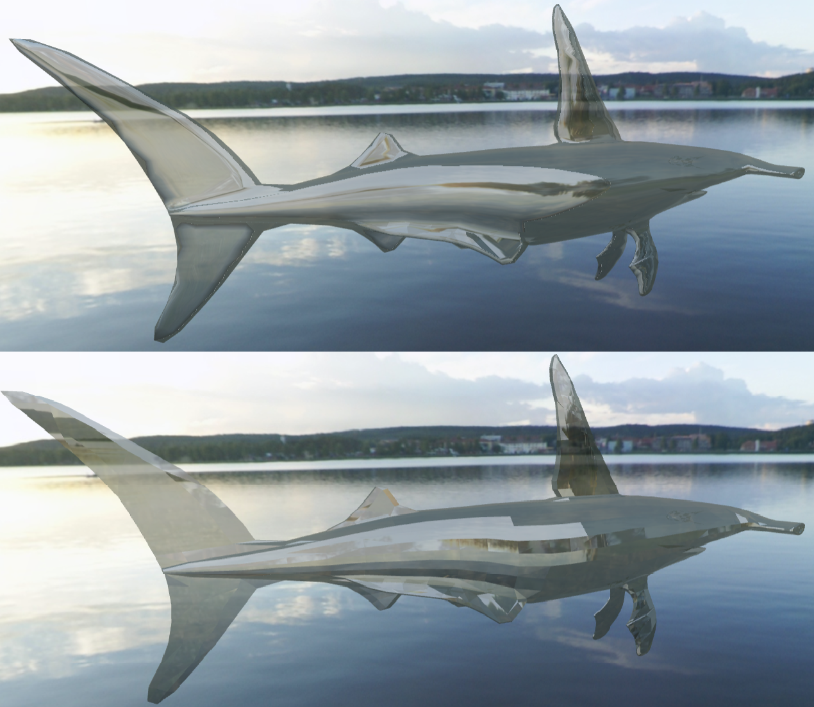

Glass Solid Viewer
We created an application that accurately depicts a glass material on a number of different models.
This includes correct diffuse/specular lighting for
transparent materials, as well as the reflection and refraction that are indicative of glass.
*This application uses the three.js library created by Ricardo Cabello.*
*Visit his website at threejs.org/.*
User Features:
View glass solids on a fully-rendered display.Toggle through different preset glass models.
Interact with the application to rotate, scale and translate the models.
Full 360 degrees of camera rotation.
Camera zoom and panning.
Change the color of each glass model.
Display each model as smooth or crystalline.
User Guide
How to Run:
Please Note: This application works in Firefox Only!
Click Here.
Camera Controls
Left-click and drag to rotate the camera around the scene.
Middle-mouse scroll to zoom the camera.
Right-click and drag to pan the camera.
Sample Output


References:
Properties of Glass (the optical properties are the important bit): http://www.saint-gobain-sekurit.com/glazingcatalouge/glass-properties#a3
Calculating Glass Properties: http://en.wikipedia.org/wiki/Calculation_of_glass_properties
Tutorial on the Using the Depth Buffer and Transparency: http://learningwebgl.com/blog/?p=859